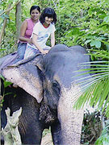

 鼻を持ちあげ“パオーン！” |
短い期間でいろいろ体験ができそうだったので参加しました。 私は、英語学習がメインの目的ではなく、スリランカのことなどいろいろ知りたかったので、レッスンではディスカッション中心にしてもらい良かったと思います。 ホームステイ先では、お母さんの作る食事がとてもおいしく、Manelとはたくさんの話しができました。 かなり慣れた頃に帰国しないといけなかったのが残念です。 |
ボランティアは象のお世話をしました。
象は頭がいいとは聞いていましたが、私におしゃべりしてくれたり鼻で甘えてきてくれたりしました。
さらに帰り際に、お別れを少し離れたところから言うと、私の方を振りむいて、鼻を持ちあげ“パオーン！”
周りにいた人もビックリでした。
本当にかわいかったです。
スリランカでは、たくさんの人と出会いました。
親切な人、やさしい人、物知りな人、シャイな人、だまそうとする人（笑）、etc
みんな素敵な人で、大切な思い出です。
スリランカに行く前はもう少しのんびりしていて、ゆっくりとした時間が流れていると思っていましたが、実際は車も多くクラクションが鳴り響いてけっこうせわしない感もありました。
きっと10数年前まではもっともっとゆっくりとしていたのでしょうが、急な変化の途中にあるのかなぁと思いました。
経済発展により得るものと失うもの、またテロや津波。
今大変な時期にあるのかもしれませんが、スリランカの良いところを大切にして大事にして変化していってほしいと思いました。
そして変化はしても彼らの素ぼくさや、人なつこい笑顔、やさしさはきっと変わらないと信じています。
又いつかスリランカへ行ってみたいです。
今度はもう少し長く滞在してゆっくりしたいです。